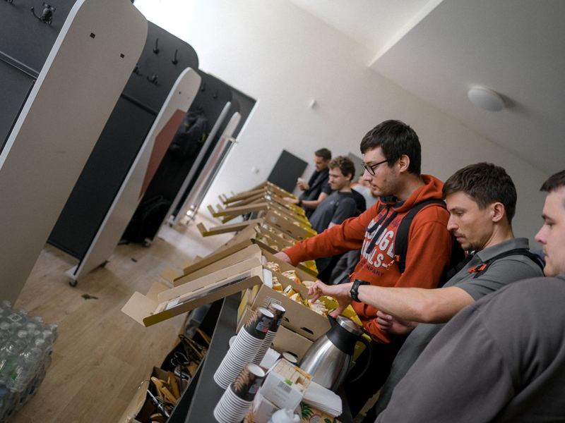
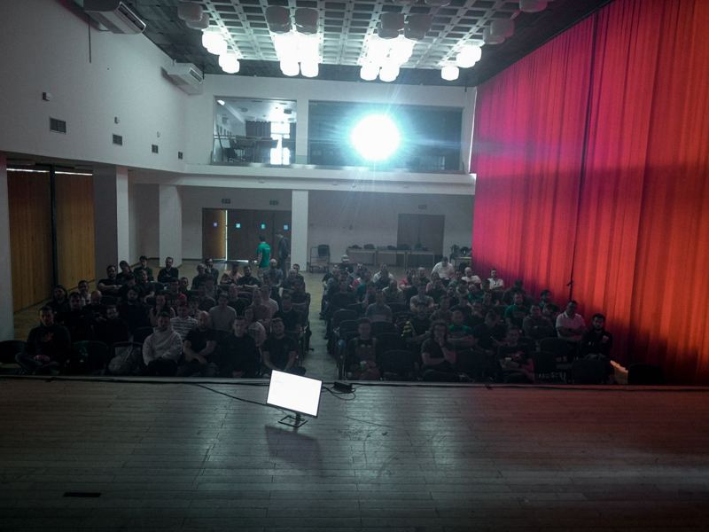
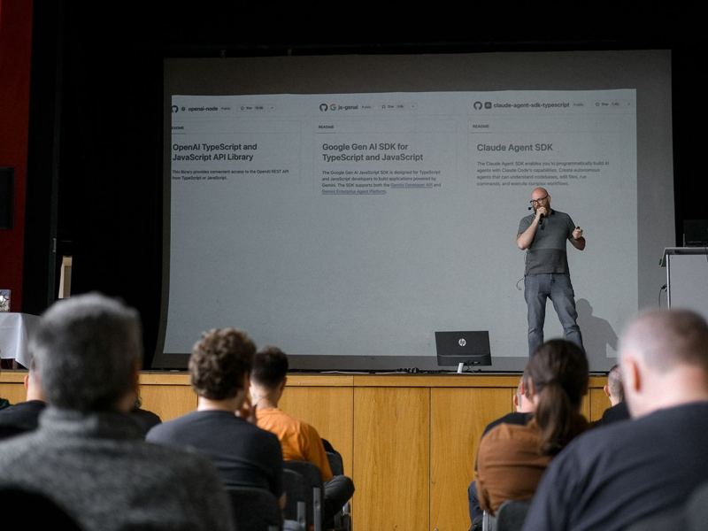
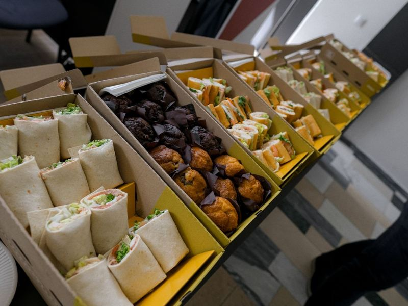
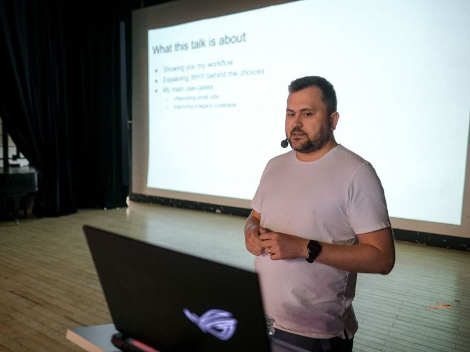
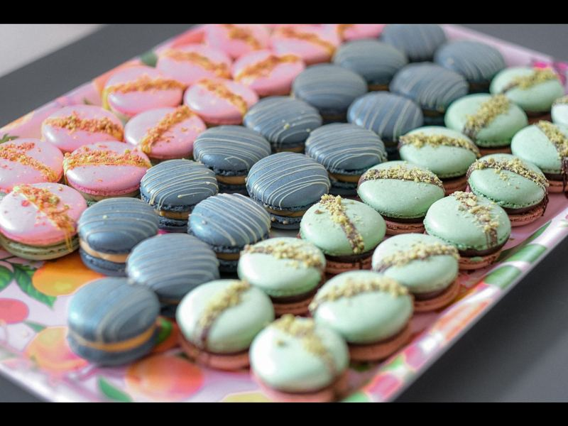
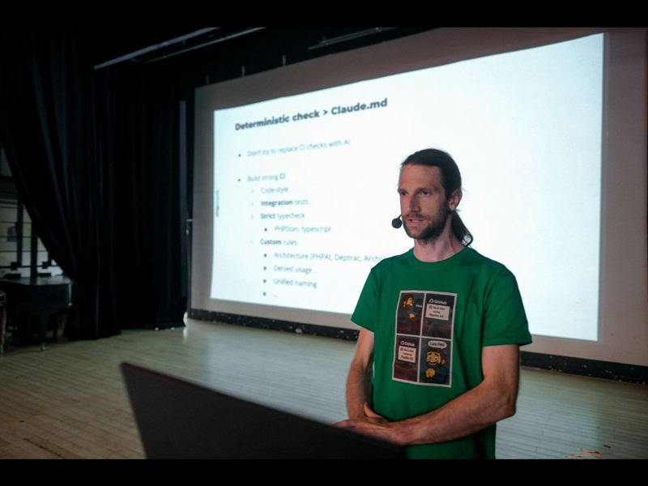
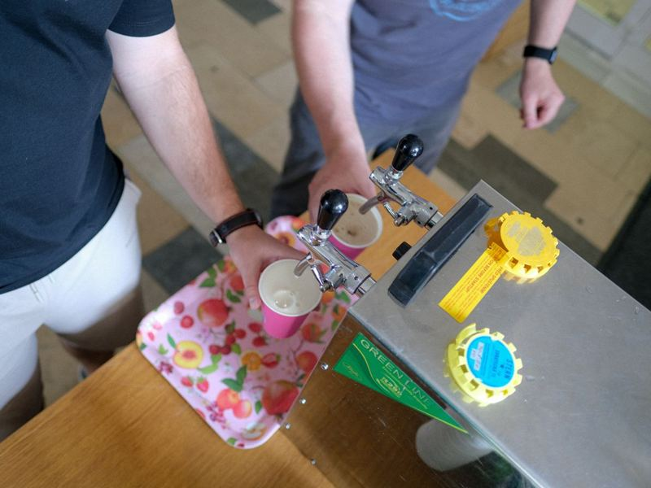
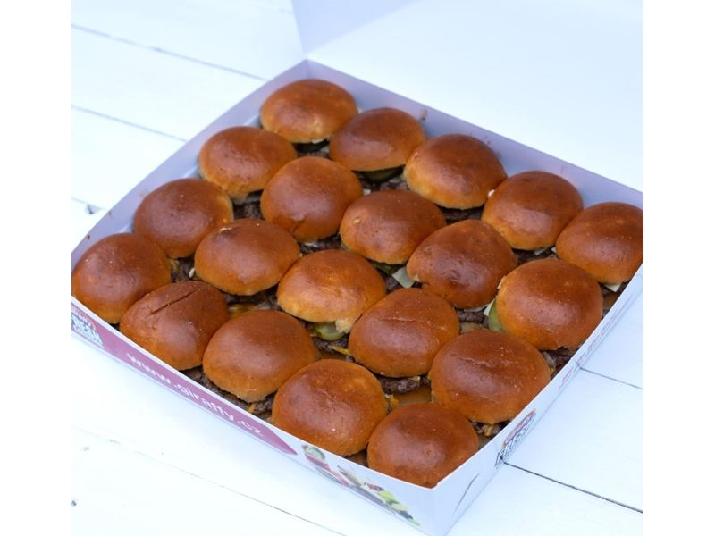
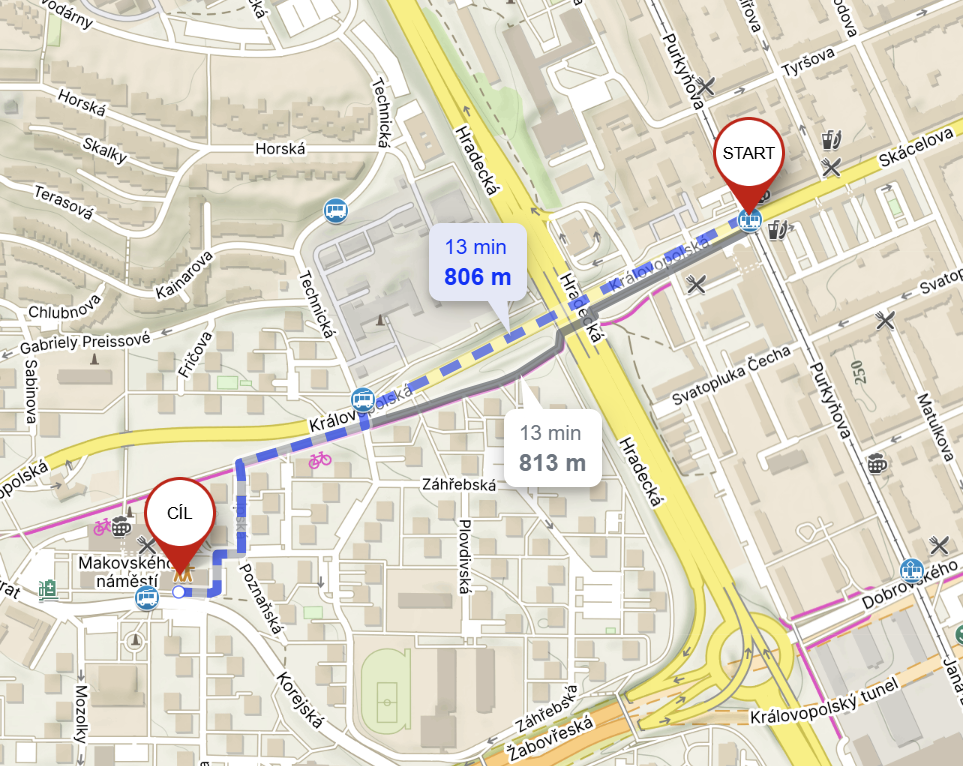

Web Science 2027
Květen 2027 / KD Rubín, Brno
Jeden den, jeden sál, ~150 vývojářů, kteří staví software s AI. Přednášky o tom, co lidé opravdu nasadili – agenti, LLM v produkci, AI coding tools, testování a provoz. Bez marketingu, s afterparty.
Call for Papers je otevřený do 31. 1. 2027. Přesný den konference upřesníme, bude to v květnu.
- TermínKvěten 2027přesný den upřesníme
- MístoKD Rubín, BrnoŽabovřesky, šalina 12 / trolejbus 36
- FormátSingle-track7 přednášek, kvíz, afterparty
- Vstupenka2 500 Kčjídlo, káva, pivo i kofola zdarma
Začali jsme jako konference pro webaře. Pak nám AI sežrala program.
V roce 2026 bylo šest ze sedmi přednášek o AI – agenti, LangChain, Claude Code, shipping AI kódu, provoz v době AI. Nikdo to neplánoval, prostě to je to, co lidé dneska staví. Tak jsme to přestali předstírat a od ročníku 2027 je Web Science konference pro AI vývojáře. Název si necháváme, historie se nemaže.
A pořád platí, co od začátku: je to komunitní akce. Pořádáme ji, protože chceme takovou konferenci v Brně mít, ne abychom na ní vydělali. Vstupné a partneři pokryjí sál, jídlo, kávu a záznamy – zisk není cíl.
Produkce, ne demo
Řečníci mluví o tom, co s AI reálně nasadili. Co fungovalo, co se rozbilo, kolik to stálo v tokenech i nervech.
Jeden sál, žádné FOMO
Single-track znamená, že nic nepropásnete a o přestávce řešíte stejné téma jako všichni kolem.
Jídlo a pití zdarma
Snídaně, teplý oběd, makronky, burgery na afterparty – a pivo a kofola taky zdarma. Káva celý den, a to vynikající, ne automat. Nic se nedoplácí.
Záznamy na YouTube
Každá přednáška jde ven jako video. Co jste nestihli nebo chcete poslat kolegům, najdete na našem kanálu.
Hledáme přednášející pro ročník 2027
Stavíte s AI nebo pro AI? Podělte se o to, co jste letos postavili, rozbili a spravili. Nepotřebujeme hvězdy ani evangelisty – potřebujeme lidi, kteří mají výsledky z produkce a umí o nich mluvit srozumitelně.
Témata, která nás zajímají
Jak to funguje
- Přednáška do 20 minut, nebo 20–40 minut plus otázky.
- Česky, slovensky nebo anglicky – jak je vám přirozené.
- Do formuláře můžete dát až tři návrhy, vybereme jeden. Stačí název, popis a délka.
- Výběr děláme ručně, odpovíme každému. Program skládáme tak, aby dával smysl jako celek – od „jak začít“ po „jak to provozovat ve velkém“.
- Rádi pomůžeme s přípravou – první přednáška není problém, naopak.
Jak bude vypadat den
Řečníky zveřejníme po uzavření Call for Papers (31. 1. 2027). Kostra dne je stejná, jaká se osvědčila v roce 2026.
- 9:00

Open door snídaně a káva zdarma
Registrace, konferenční triko, tištěný program, lehká snídaně a vynikající káva – zdarma, celý den.
- 9:30

Zahájení
Úvodní slovo organizátora, představení programu a praktické informace.
- 10:00– 12:45

Dopolední blok 3 přednášky
Tři přednášky s přestávkami na kávu. Jména doplníme průběžně, jak budeme potvrzovat přihlášky z CFP. Chcete tu být vy?
- 12:45

Oběd zdarma
Teplý oběd přímo v místě konference, v ceně vstupenky. Nikam se nechodí, nic se neplatí.
- 13:45

Odpolední blok I 2 přednášky
Dvě přednášky s přestávkou. Odpoledne patří hlubším tématům – agenti v produkci, testování, provoz – ale rozhodne CFP.

Pauza na kávu zdarma
Vynikající káva, makronky a chvíle na to probrat, co jste právě slyšeli.
- do 17:30

Odpolední blok II 2 přednášky
Poslední dvě přednášky dne. Jména doplníme, jak budeme potvrzovat přihlášky z CFP.
- 17:45

Závěrečné slovo & kvíz o ceny
Poděkování řečníkům i účastníkům a vědomostní kvíz s cenami od partnerů.
- 18:30

Afterparty burgery, pivo a kofola zdarma
Burgery z grilu od Giraffy, pivo a kofola zdarma a diskuze s přednášejícími přímo v sále. Všichni jste zváni, končíme, až to přestane bavit.


Jedna vstupenka, jedna cena
Žádné early bird, late nebo VIP. 2 500 Kč od prvního dne do posledního – jídlo, káva, pivo i kofola zdarma, nic se nedoplácí. Jsme komunitní akce, cena pokrývá náklady, ne marži.
Vstupenka
Stejná cena po celou dobu prodeje.
- Celý den přednášek v jednom sále
- Triko webového vědce a tištěný program
- Snídaně a teplý oběd zdarma
- Vynikající káva a pití celý den zdarma
- Makronky, burgery na afterparty, pivo a kofola zdarma
- Přístup k videozáznamům
Platba kartou přes Stripe. Vstupenka je na jméno, u vstupu nic dalšího nepotřebujete.
Pro firmy a týmy
Chcete poslat celý tým, potřebujete fakturu na firmu nebo objednávku přes nákupní oddělení?
- Faktura: při platbě kartou zadejte fakturační údaje, doklad přijde automaticky. Platbu převodem vyřídíme e-mailem.
- Skupinové vstupenky: od 5 lidí se domluvíme na ceně – napište nám.
- Slevové kódy: partneři konference mají kódy pro své lidi, ptejte se u nich.
- Změna jména: vstupenku lze předat kolegovi, stačí dát vědět.
Jak to u nás vypadá
Sedm přednášek (šest o AI), plný sál, makronky a afterparty s burgery. Fotky z 13. května 2026 v KD Rubín (burgery foto: Giraffy).


Kulturní dům Rubín, Brno-Žabovřesky
Stejný sál jako v roce 2026 – velké pódium, dobrý zvuk, prostor na stánky partnerů i afterparty, a všechno pod jednou střechou.

Makovského náměstí 3166/3
616 00 Brno-Žabovřesky
- ŠalinaLinka 12 na zastávku Skácelova a 800 m pěšky ke KD Rubín. Trasa
- VlakZ hlavního nádraží šalinou 12 na Českou, přestup na trolejbus 36, výstup Makovského náměstí. Trasa
- AutoParkování v okolí KD Rubín, v ulici Poznaňská nebo na parkovišti Záhřebská.
- LetadloNa BRQ, autobusem 76 na hlavní nádraží a dál podle MHD trasy.
Staňte se partnerem konference
150–200 vývojářů, kteří staví s AI, na jednom místě, jeden den, jeden sál. Web Science je komunitní akce bez cíle vydělat – partneři nám umožňují držet cenu vstupenky nízko a jídlo, kávu i afterparty zdarma.
Gold
- 2 vstupenky na konferenci
- Logo na webu, v tištěném programu a u videozáznamů
- Rollup a výstavní stánek v prostorách konference
- Logo v prostoru registrace
- Sponzor kvízu o ceny
Chcete něco jiného – sponzorovat oběd, afterparty nebo kávu? Napište Vaškovi.
Proč to dává smysl
- Publikum jsou seniorní vývojáři a lidé, kteří rozhodují, jak se u nich AI používá
- Celý den na jednom místě – stánek vidí všichni, ne jen ti, co zabloudí do správného sálu
- Logo u záznamů na YouTube žije dlouho po konferenci
- Afterparty v sále = neformální náborový kanál
- Slevové kódy pro vaše lidi
- Férová cena, žádné „na vyžádání“
Na co se ptáte
Kdy přesně konference bude?
V květnu 2027 v Brně. Přesný den potvrdíme co nejdřív – dáme vědět na webu, LinkedInu a e-mailem všem, kdo už mají vstupenku.
Pro koho je Web Science?
Pro vývojáře, kteří staví software s AI nebo pro AI – agenty, LLM integrace, AI coding tools, provoz modelů – a pro ty, kdo o tom v týmu rozhodují. Témata jsou technická, ale přednášky vybíráme tak, aby se z nich něco odnesl junior i tech lead.
Kdo to pořádá a jde o byznys?
Pořádá to Vašek Čevela s komunitou Péhápkaři Brno a pár dobrovolníky. Je to komunitní akce – vstupné a partneři zaplatí sál, jídlo, kávu, afterparty a záznamy, a tím to končí. Zisk není cíl, cílem je mít v Brně konferenci, na kterou bychom sami chtěli jít.
Proč se to jmenuje Web Science, když je to o AI?
Protože jsme tak začali. Ročníky 2020 a 2025 byly o webu – PHP, frontend, CSS, Event Sourcing. V roce 2026 bylo šest ze sedmi přednášek o AI, aniž bychom to plánovali. Tak jsme to vzali na vědomí: od 2027 je Web Science konference pro AI vývojáře. Název zůstává, komunita taky.
V jakém jazyce jsou přednášky?
Většina česky nebo slovensky, občas anglicky. Program u každé přednášky uvede jazyk.
Zlevní vstupenka, když počkám?
Ne. Cena je 2 500 Kč od začátku do konce prodeje, žádné early bird ani last minute. Jediné, co se čekáním mění, je počet volných míst.
Potřebuju fakturu na firmu.
Při platbě kartou vyplňte fakturační údaje firmy, doklad vám přijde automaticky. Pokud musíte platit převodem nebo přes objednávku, napište na info@webscience.cz.
Můžu vstupenku vrátit nebo předat?
Předat kolegovi ano, stačí nám napsat jméno. Vracení řeší obchodní podmínky – ozvěte se, snažíme se domluvit.
Co je v ceně?
Celý program, snídaně, teplý oběd, vynikající káva a pití po celý den, makronky, konferenční triko, tištěný program, burgery na afterparty včetně piva a kofoly, a přístup k záznamům. Všechno zdarma v rámci vstupenky, nic se nedoplácí.
Budou záznamy?
Ano, všechny přednášky nahráváme a po konferenci je zveřejňujeme na YouTube kanálu. Záznamy z roku 2026 a 2025 tam už jsou.
Chci přednášet, ale ještě jsem nikdy nepřednášel/a.
Super, přesně takové lidi hledáme. Přihlaste téma přes Call for Papers, s přípravou pomůžeme – od struktury až po zkoušku na nečisto.
Jak se chováme k sobě navzájem?
Podle Code of Conduct. Stručně: slušně, s respektem, a když něco neklape, řekněte to organizátorům.